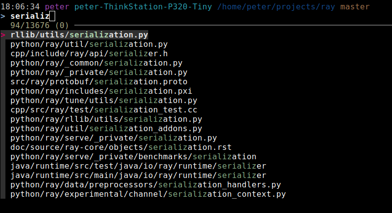
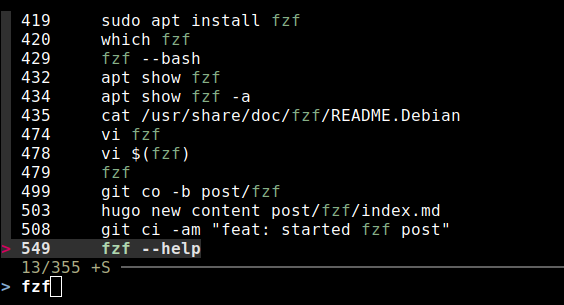

I think this one’s a game changer for terminal users. FZF is a fuzzy finder for any kind of list, so in other words can help you to filter a list to items similar but not exactly the same as what you’re searching for. Very significantly, this also means you can search any part of the list of things that you’re searching through for your query string.
Here are the two big problems that I think this solves:
- Easily finding files when I’m not sure exactly which directory they’re in.
- Finding a past command when I can only recall part of the command
Finding Files
This is the biggest win in my opinion. Yes, there is a find command, but it’s slow and the syntax is verbose. Normally in this scenario I would probably use some combination of cd, ls and tree, or maybe find if I got a bit stuck. With fzf all you need to do is hit Ctrl + T and you’ll be able to search through the subfolders of the current directory with fuzzy matching. Even better, you can use this in the middle of a command. For example, let’s say I’m working with a massive code repository like Ray, which is a framework for distributed ML compute. It contains 11733 files and directories as of today. In the example below I’m looking for files related to serialization.

We get results from many different parts of the code repo. All we need to do is select the file and hit ’enter’ and bingo, it’s full path is on our terminal line. We can continue editing my command before we run it, which means this interferes minimally with the flow of work.
Reverse Search
You might have been using the built-in reverse search in Mac or Linux in which case this will be an upgrade, or if not this will be a massive win. Just like the built-in reverse search you can hit Ctrl + R to enter this mode and start typing the command you’re looking for. This is now searching through your shell history, but unlike the built-in reverse search you’re using fuzzy search to do this. Not only that but you can search every part of the command. Here’s an example of searching my history for commands related to fzf

We can see that we get results where fzf is in different parts of the command, and it’s really easy to select whic one to use.
Conclusion
There are other things you can do with fzf, for example you can use the output of fzf directly like in the command numbered 478 above. This would open up the selected file in vi directly. Personally I don’t find this so smooth and would prefer to get the file in the terminal because I can edit the path or the overall command if needed.
Check out the github page for fzf here which has installation instructions. Happy fuzzy finding!